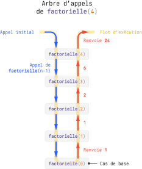
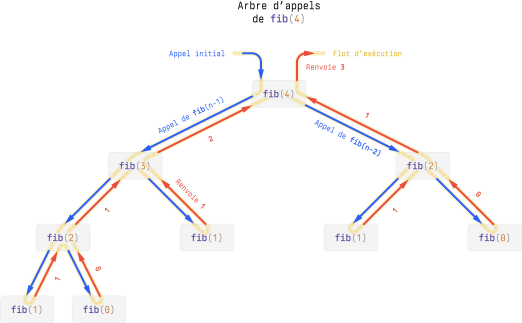

Récursivité
-
Une fonction est dite récursive si elle s'appelle elle-même au cours de son exécution.
-
La condition d'arrêt située au début de toute fonction récursive, définit le cas de base et permet d'arrêter la chaîne des appels.
-
Si un programme récursif peut (pas toujours !) se traduire dans un style itératif (avec de simples boucles), et inversement, aborder de manière récursive un problème est parfois plus facile.
-
Il est essentiel de comprendre le déroulement d'une fonction récursive. Par exemple, si on appelle
factorielle(5), cette fonction devra attendre le résultat defactorielle(4)avant de pouvoir renvoyer son propre résultat. Et de la même manière,factorielle(4)devra à son tour attendre le résultat defactorielle(3). Et ainsi de suite, jusqu'au cas de base.

- Il est courant de partir d'une définition mathématique récursive et de la traduire en code :
- Un arbre d'appels permet de visualiser l'ordre des appels récursifs :
